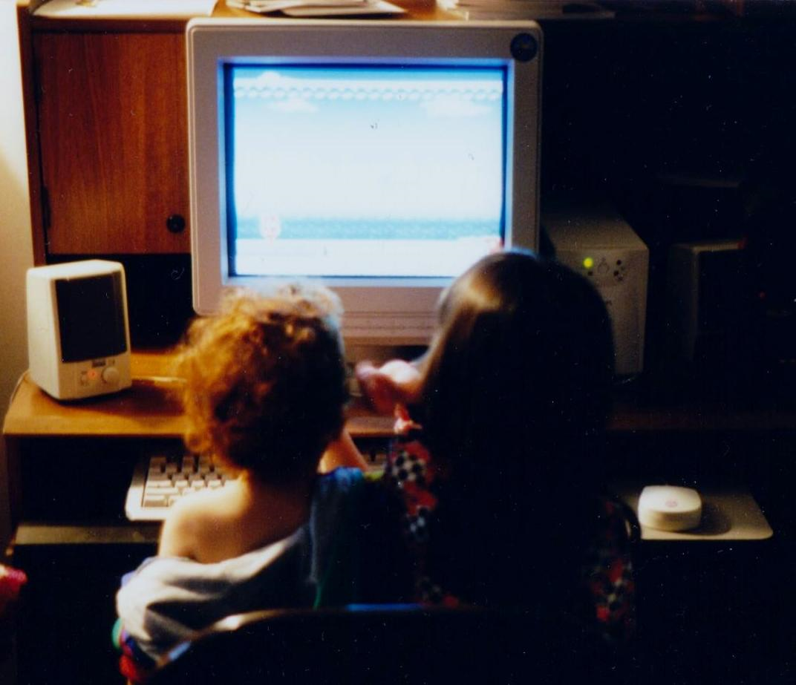
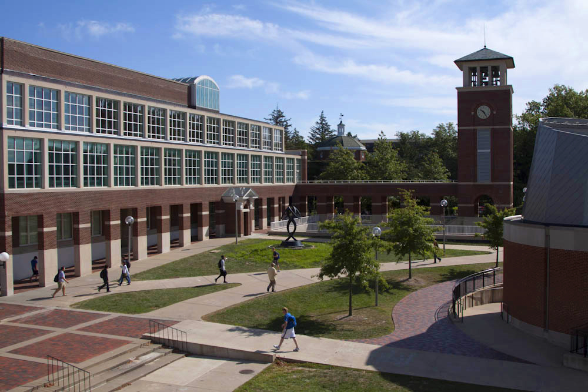

Early Life 
This is me (and my little brother, pictured left) back in the 90s. I don't remember a time when we didn't have a computer in the house.
As a child, I was interested in science and tech (and loved playing video games), so it was almost a default assumption that I would go into a STEM field later in life.
I even went to a Girl Scout event called "Extreme Science Careers" where they flew 24 girls from across the US to New York for a week-long workshop.
Secondary Education 
Unfortunately, my plans for a STEM career were tossed out the window at this stage, as my high school's STEM classes and opportunities paled in comparison with its English and psychology offerings. Unsurprisingly, I decided to pursue a career path based on what I loved to study most.
I continued to pursue my interest in computer programming, though. I attempted to organize the production of an indie game with a small group of friends, and I coded several scenes of character interaction and exposition. However, my friends weren't nearly as serious about the endevour as I was, and we decided that it would be best to let the project die.
My father tried to convince me to go back to school and become an engineer, but I hesistated at the thought of how many years of schooling that would take and dealing with the inevitable student debt. (I am extremely debt-averse.)
Certified Pharmacy Technician
I found a training program that I could afford outright, a pharmacy technician training program at a local community college. I knew that it was an underserved field, and the thought of helping others appealed to me.
Once I finished my certification test, I found a full-time position within convenient commutting distance. The work was very demanding but it was also rewarding to know that I was helping others.
However, community pharmacy suffers from a majot issue: The software is very outdated and difficult to work with. In rare cases, software error can even endanger patients. The more I thought about it, the more I began to feel like I was in the wrong field.
On the recommendation of friends and family, I looked into LaunchCode, and I subscribed to their newsletter. I bought a new laptop and patiently waited for enrollment to open for the LC101 night class.
The Present
Even better, LaunchCode announced that they would be starting a new program called "Immersive CodeCamp" based on their LC101 curriculum.
I applied and while working through the preliminary work for the program, found that their online lessons 'clicked' better than any programming self-study that I had previously done.
Coincidentally, the first class session was on my birthday. You could say that an opportunity to embark on this exciting new career path is the best present I've ever received.